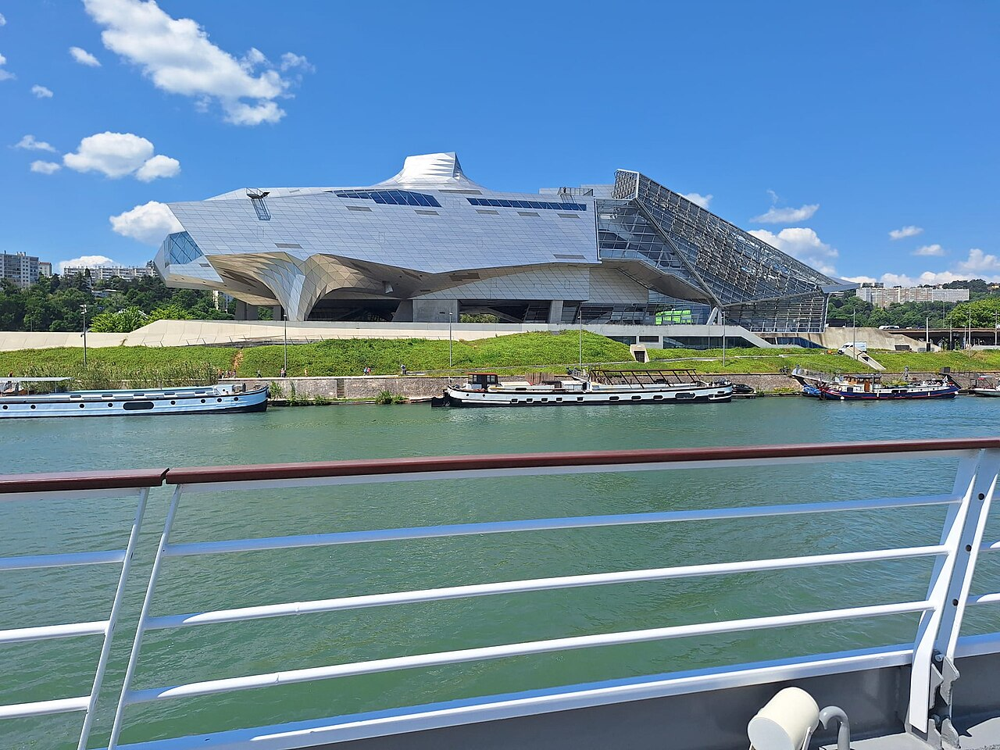

Les récits du monde
Cette salle confronte les explications scientifiques sur l’origine de l’Univers, de la Terre et de l’humanité à d’autres récits et représentations culturelles.
Le musée des Confluences se choisit si vous aimez les grandes questions plutôt que les collections rangées par discipline. Sciences naturelles, anthropologie, sociétés et croyances sont mises en relation pour construire un parcours autour des origines, du vivant et des façons d’habiter le monde.

Le parcours permanent ne sépare pas strictement zoologie, ethnologie, archéologie ou histoire des sciences. Les objets et spécimens sont réunis autour de quatre questions communes.
Cette salle confronte les explications scientifiques sur l’origine de l’Univers, de la Terre et de l’humanité à d’autres récits et représentations culturelles.
Le parcours met en relation diversité des espèces, évolution et interdépendances pour montrer le vivant comme un réseau plutôt qu’un catalogue d’animaux.
Objets et comparaisons abordent les manières d’organiser la vie collective. Cet espace entre dans une phase de transformation à l’automne 2026.
Rites, objets et croyances permettent de comparer différentes manières humaines de penser la mort et ce qui peut lui succéder.
Source : parcours permanent du musée.
Le musée annonce la fermeture de Sociétés, le théâtre des Hommes à partir du 22 septembre 2026 pour travaux et création d’un nouveau parcours. La réouverture est annoncée pour fin 2027. Si cette salle motive votre visite, vérifiez le calendrier officiel avant le déplacement.
Informations de parcours 2026-2027, vérifiées le 14 septembre 2026.
Installé à la rencontre du Rhône et de la Saône, le bâtiment conçu par Coop Himmelb(l)au multiplie les circulations et les points de vue. Le musée permet aussi d’accéder gratuitement à certains espaces publics du bâtiment, au hall et à la terrasse sans billet d’exposition.
Le musée prête notamment poussettes, fauteuils roulants et sièges-cannes. Il propose aussi sur demande des casques anti-bruit, lunettes pour hypersensibilités à la lumière, fidgets et supports de communication.
Sources : présentation du musée et de l’architecture · confort de visite.
En période scolaire et en été, le musée ouvre du mardi au dimanche de 10h30 à 18h30. Pendant les vacances scolaires de la zone A, hors été, il ouvre aussi le lundi. Le premier jeudi du mois, la nocturne se prolonge jusqu’à 22h.
Le billet valable à la journée pour les expositions permanentes et temporaires coûte 12 € au plein tarif et 7 € au tarif réduit. Les moins de 18 ans, étudiants de 18 à 25 ans et plusieurs autres publics bénéficient de la gratuité.
Le musée se trouve au 86 quai Perrache, 69002 Lyon. L’arrêt de transports en commun porte le nom « musée des Confluences ». Vérifiez les perturbations temporaires de lignes avant le départ.